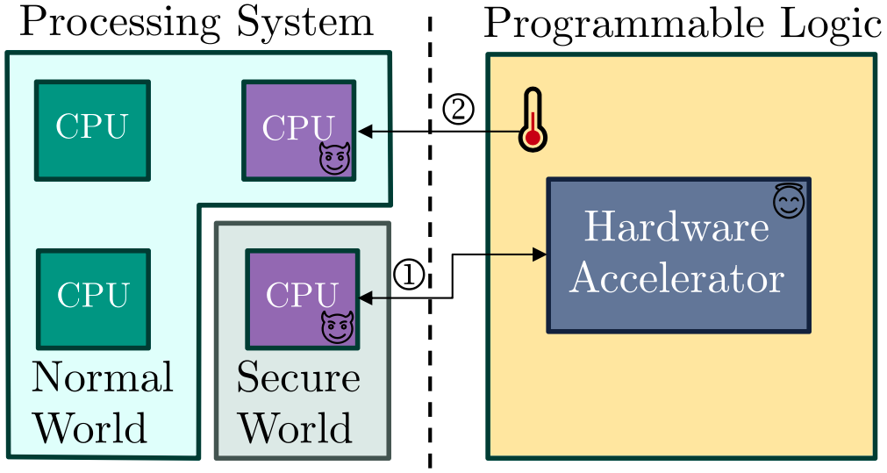

Through Fabric: A Cross-world Thermal Covert Channel on TEE-enhanced FPGA-MPSoC Systems
A trusted execution environment is supposed to keep a secure world isolated from the normal world. We show that a benign hardware accelerator, heated on purpose, can carry data across that boundary as temperature.


The problem
Modern FPGA-MPSoCs combine processors with programmable logic, and vendors protect sensitive data on them with trusted execution environments (TEEs) such as ARM TrustZone and OP-TEE. A TEE splits the system into a secure world and a normal world and guards the confidentiality and integrity of what runs in the secure side. It does not address covert and side channels, which let two cooperating programs leak data through a shared physical resource.
Covert channels on FPGAs were already known, using voltage, frequency or temperature. But earlier work made two assumptions that rarely hold in practice. It assumed the system runs bare metal with no TEE, and it assumed the attacker can load malicious hardware, such as ring oscillators, for both the sender and the receiver. A TEE is easy to deploy on FPGA-MPSoCs, and malicious hardware is easy to detect and ban.
The question we asked: can a TEE still be bypassed with no malicious hardware and no extra privileges?
The approach
The sender is a trusted application in the secure world, for example one supplied by a dishonest vendor. It uses an ordinary open-source AES accelerator in the programmable logic. To send a 1, it runs extra decryptions, which heats the logic. To send a 0, it waits and lets the logic cool. The receiver is an ordinary normal-world application that reads the logic's temperature sensor, which is accessible from the normal world.
Reading the message back is a signal-processing problem, because ambient temperature and other noise also move the reading. The receiver filters the readings with an FFT over a moving window at the transmit frequency, then decodes each bit using high and low amplitude thresholds. When many identical bits arrive in a row, the temperature saturates, so it also checks the slope of the signal to decide whether the bit flipped.
Neither side needs privileged permissions, custom hardware on the sender, or extra logic on the receiver.
Results
- Demonstrated on a commercial ZCU102 FPGA-MPSoC running OP-TEE: 8,000 bits sent as 1,000 packets of 8 bits.
- To show it visually, we sent a 64×64 binary image across the channel with a bit error rate under 2%.
- The first temperature-based covert channel between CPUs through an FPGA, and the first shown to bypass a TEE on an FPGA-MPSoC.
- We also discuss countermeasures: injecting noise at the channel frequency, and adding an increasing delay when a trusted application uses the accelerator at an abnormal rate. Both carry performance or energy costs.